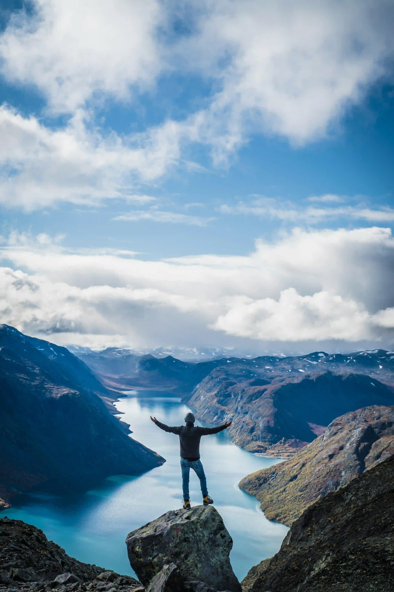
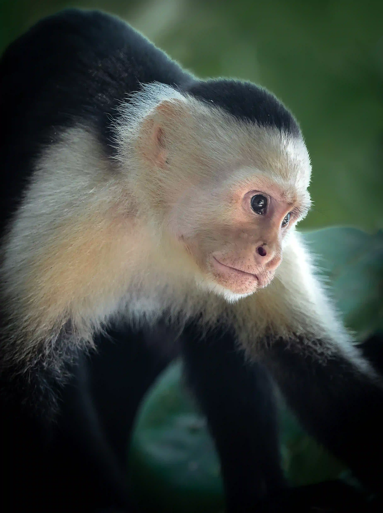
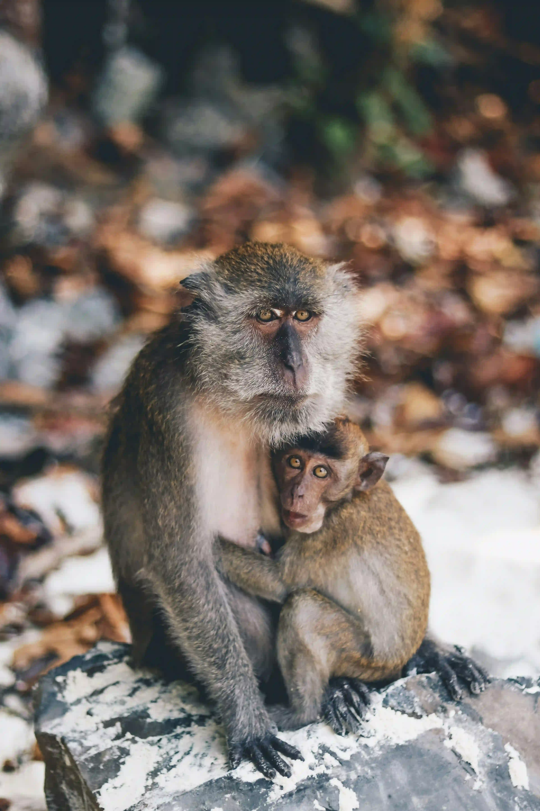

Paisaje montañoso
Optimizado con compresión lossy al 80% de calidad. Reducción del 65% frente al JPG original.

Mono AVIF
Formato AVIF con compresión avanzada. Mantiene excelente calidad en tonos de piel.

Capuchino WebP
Foto optimizada en WebP para no perder muchos detalles.

Mono sentado WebP
Transparencia alpha conservada con tamaño reducido en un 40% frente a PNG.
Mono Triste JPG
Imagen en formato JPG con compresión estándar.